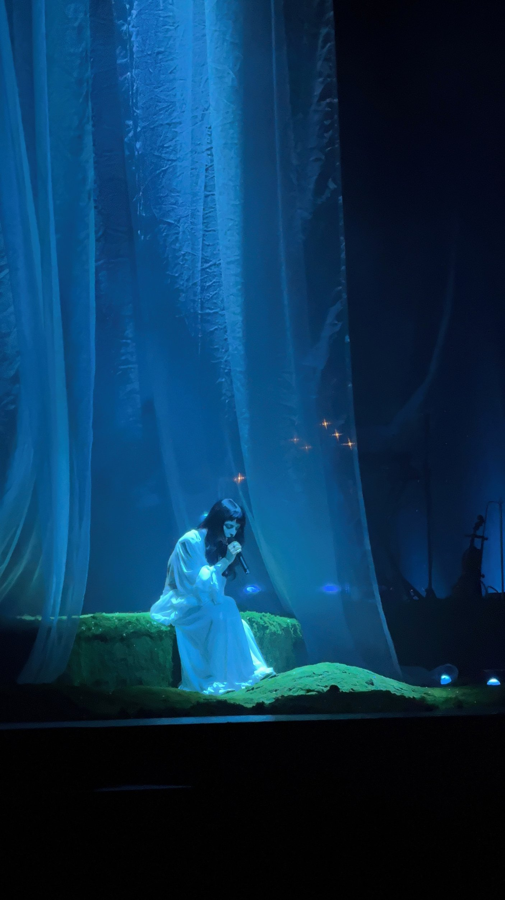

At first glance, this image appears to be a simple nature photograph, but the photographer's deliberate choices reveal something far more intentional. The camera is placed almost flush with the ground, making the shadowed pavement dominate the foreground while the golden-leaved tree blazes against a vivid teal sky. The converging tile lines function as a subtle leading line, drawing the eye upward and giving the image an almost reverent quality. The contrast in color temperature, cool cinematic blue against warm amber, feels emotionally honest rather than artificial. To push this further, I would suggest eliminating the utility poles on the right edge and shooting closer to golden hour to make the tree's glow feel even more otherworldly.

This image captures a performer seated on a mossy stone platform, dressed in a flowing white gown, within a stage environment designed to resemble an otherworldly forest or underwater dreamscape. Massive translucent curtains billow behind her in deep teal-blue, while scattered amber sparks float in the background like fireflies, and a partially visible shipwreck prop sits quietly in shadow at the right edge. What you would not know from looking alone is how the grandeur of the stage was engineered to make the entire audience feel submerged, as being there in person meant the sound filled the room in a way the photograph can only gesture toward. This image fits into a concert archive about live music as an emotional and aesthetic experience, evidence that some performances are closer to theater or visual art than a typical show. It reflects something about me too, that I seek out artists who treat their concerts as immersive worlds, and that I am drawn to moments of intimacy within massive, collective spaces.